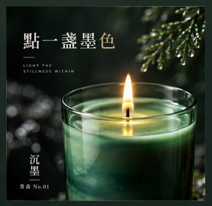
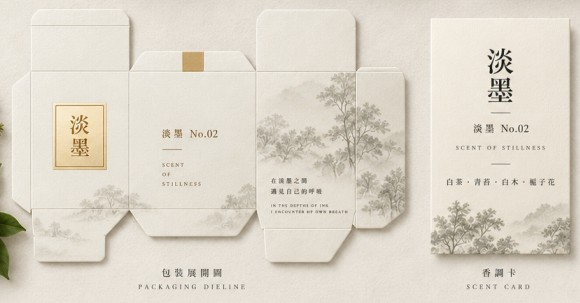
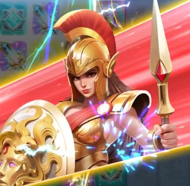
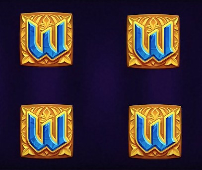

PV / AMV
01Animation · Motion · AI
ABOUT
I create visual experiences through design, motion and AI.
我是一名以多媒體視覺設計為核心的創作者， 對影像、動畫、平面設計以及新型 AI 創作工具 保持高度興趣。
希望透過不同工具與技術， 將想法轉化成具有視覺吸引力的作品， 並持續探索 AI 與傳統設計的結合方式。
SKILLS
SELECTED WORKS
作品集
Animation · Motion · AI

Compositing · Creative · AI

Compositing · Creative · AI

Animation · Motion · VFX

Animation · Motion · VFX
Animation · Motion · VFX
Animation · Motion · VFX
Animation · Motion · VFX
Commercial · Editing · AI
Compositing · Creative · AI
Animation · Motion · VFX
Animation · Motion · VFX